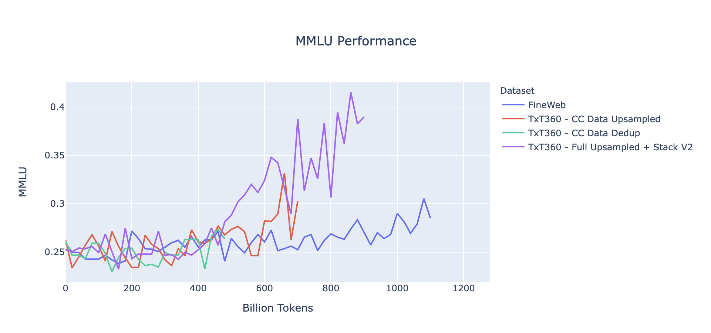

About TxT360
TL;DR We introduce TxT360 (Trillion eXtracted Text), the first dataset to globally deduplicate 99 CommonCrawl snapshots and 14 high-quality data sources from diverse domains (e.g., FreeLaw, PG-19, etc.). The large-scale deduplication process and rich metadata stored enables precise control over data distribution. We demonstrate a simple but effective upsampling recipe that creates a 15+ trillion-token corpus, outperforming FineWeb 15T on several key metrics. With the information, TxT360 empowers pre-trainers to explore more advanced weighting techniques, a feature not commonly available in previous pre-training datasets. Our findings highlight the importance of both high-quality data sources and appropriate weighting for optimal blending in LLM training. In line with our 360° open source spirit, we document all detailed steps, reasons of our decisions, detailed statistics, our code (stay tuned!), analysis results and more, in additional to the dataset itself. We hope this can serve as a useful resource for future developers.
Building on top of the prior studies on pre-training data, TxT360 carefully implements data processing steps including extraction, filtering, deduplication, personally identifiable information removal, and other steps. Unlike DCLM and RedPajama V2, we also hope to provide a dataset at this scale that is ready to go, without requiring futher filtering.
How to Read this Blog Post?
This document contains all the details and is lengthy. We recommend readers to use the Table of Contents to jump to the appropriate sections. The post might also be slightly too long for mobile reading (sorry!). At each top level section, we provided a quick guide for the content. We also recommend readers to consider this post as a reference for some high level statistics related to pre-training datasets. Advanced blog navigation elements are available on laptops and larger viewing windows.
Why TxT360
In this year we have seen excellent datasets released by the community. Among those, most datasets focus on one source (e.g., crawled websites, code bases, papers). However, it is not trivial to combine these sources together due to the potential duplicaiton across them. TxT360 is the first dataset to combine most of sources commonly used in pretraining.
| Data Source | TxT360 | FineWeb | RefinedWeb | PedPajamaV2 | C4 | Dolma | RedPajamaV1 | The Pile |
|---|---|---|---|---|---|---|---|---|
| CommonCrawl Snapshots | 99 | 96 | 90 | 84 | 1 | 24 | 5 | 0.6% of 74 |
| Papers | 5 Sources | - | - | - | - | 1 Source | 1 Source | 4 Sources |
| Wikipedia | 310+ Languages | - | - | - | - | Included | Included | English Only |
| FreeLaw | Included | - | - | - | - | Included | - | Included |
| DM Math | Included | - | - | - | - | Included | - | Included |
| USPTO | Included | - | - | - | - | Included | - | Included |
| PG-19 | Included | - | - | - | Included | Included | Included | |
| HackerNews | Included | - | - | - | - | - | Included | |
| Ubuntu IRC | Included | - | - | - | - | - | Included | |
| EuroParl | Included | - | - | - | - | - | Included | |
| StackExchange | Included | - | - | - | - | Included | Included | |
| Code | ** | - | - | - | - | Included | Included | Included |
Our Approach
To produce TxT360, a comprehensive data processing pipeline was designed to account for the nuances of both web and curated datasets. The pipeline presents a unified framework for processing both data types, making it convenient and easily adaptive for users to revise and fine-tune the pipeline for their own use cases. Web datasets are inherently noisy and varied. The TxT360 pipeline implements sophisticated filtering and deduplication techniques to clean and remove redundancies while preserving data integrity. Curated datasets are typically structured and consistently formatted, but also can cause troubles with their own special formatting preferences. TxT360 filters these sources with selective steps to maintain their integrity while providing seamless integration into the larger dataset. Both data source types are globally deduplicated together resulting in ~5T tokens of high-quality data. The table below shows the source distribution of TxT360 tokens. Note that we do not recommend to use the raw distribution of the deduplicated dataset, a simple recipe is provided in the studies section.
| Data Source | Raw Data Size | Token Count | Information Cut-Off Date |
|---|---|---|---|
| CommonCrawl | 9.2 TB | 4.83T | 2024-30 |
| Papers | 712 GB | 154.96B | Q4 2023 |
| Wikipedia | 199 GB | 35.97B | - |
| FreeLaw | 71 GB | 16.7B | Q1 2024 |
| DM Math | 22 GB | 5.23B | - |
| USPTO | 45 GB | 4.95B | Q3 2024 |
| PG-19 | 11 GB | 2.63B | - |
| HackerNews | 4.1 GB | 1.08B | Q4 2023 |
| Ubuntu IRC | 4.7 GB | 1.54B | Q3 2024 |
| EuroParl | 6.1 GB | 1.96B | - |
| StackExchange | 79 GB | 27B | Q4 2023 |